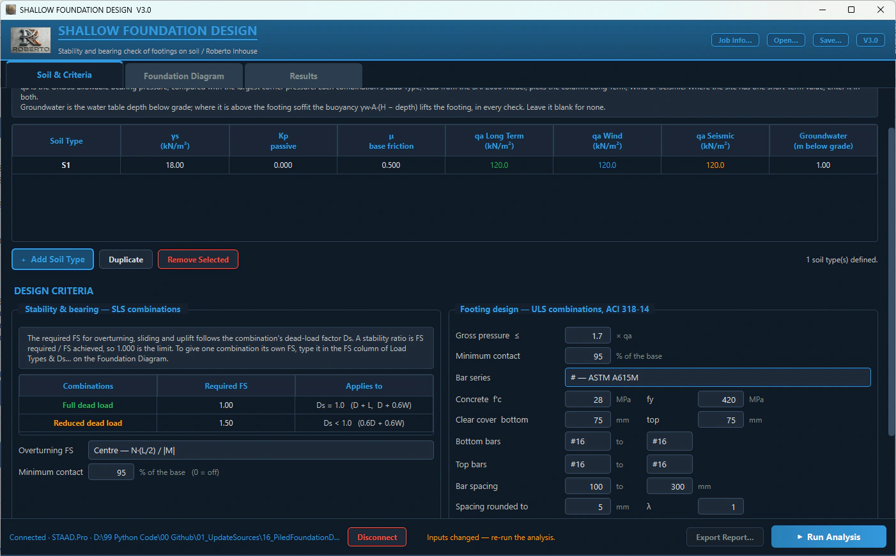
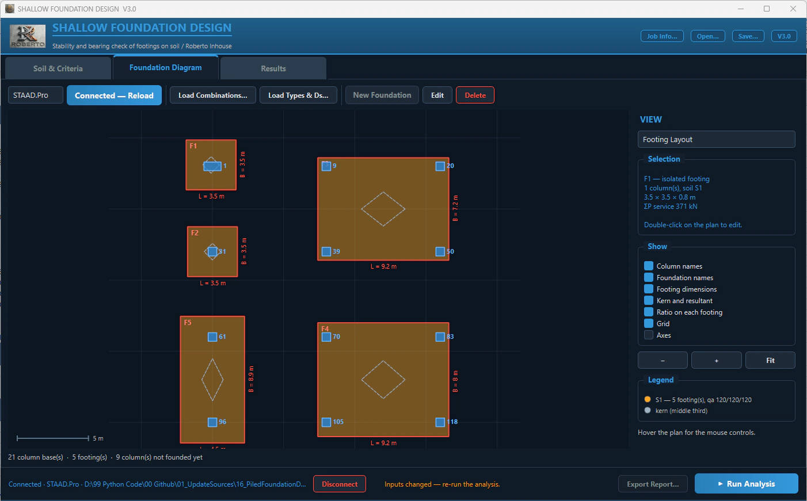
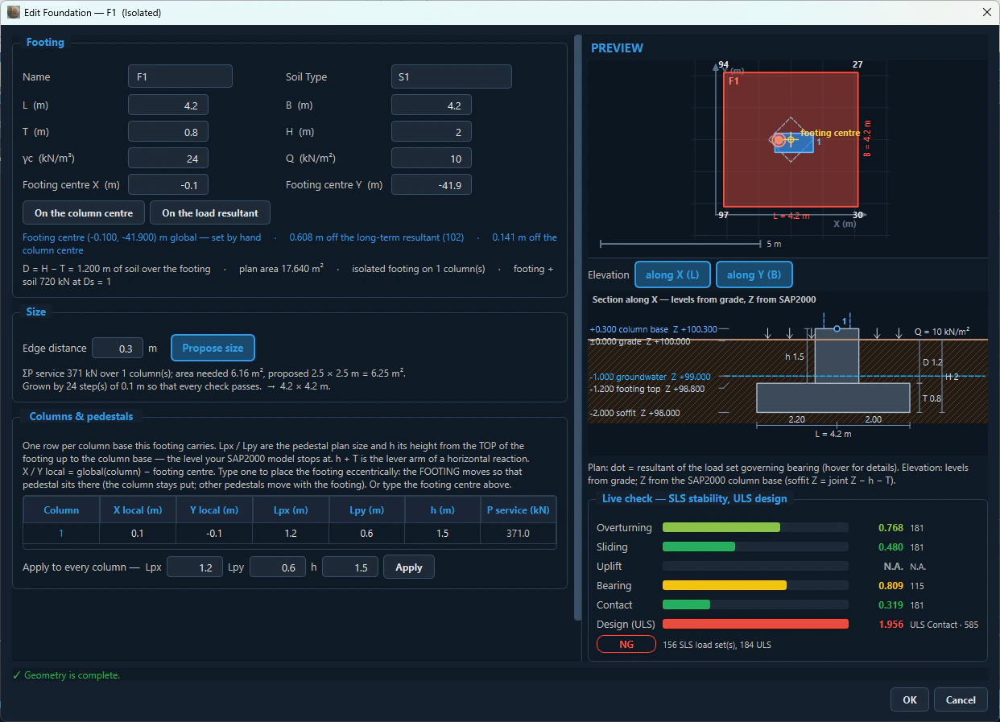
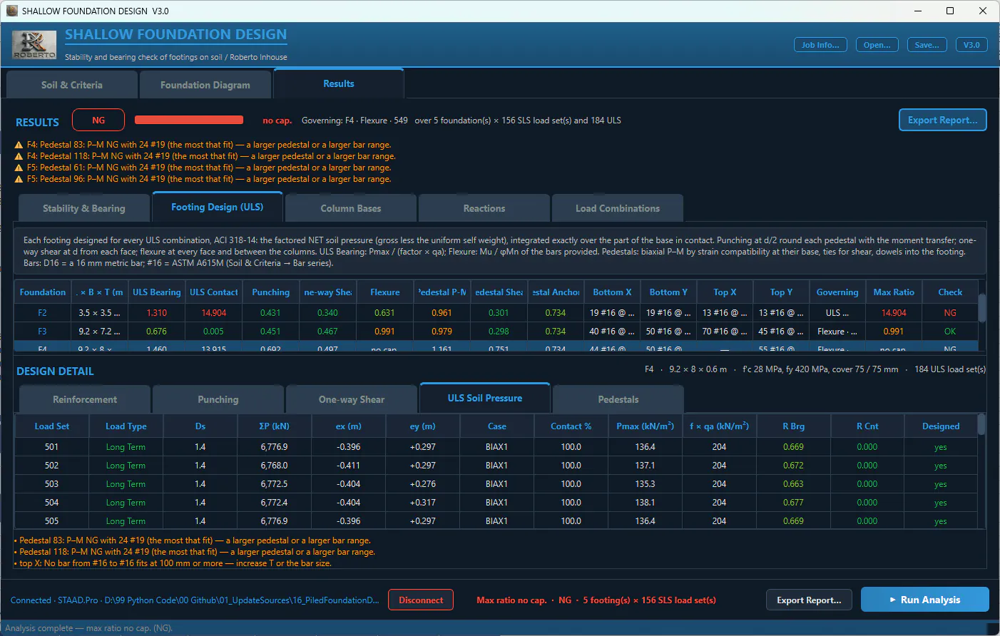
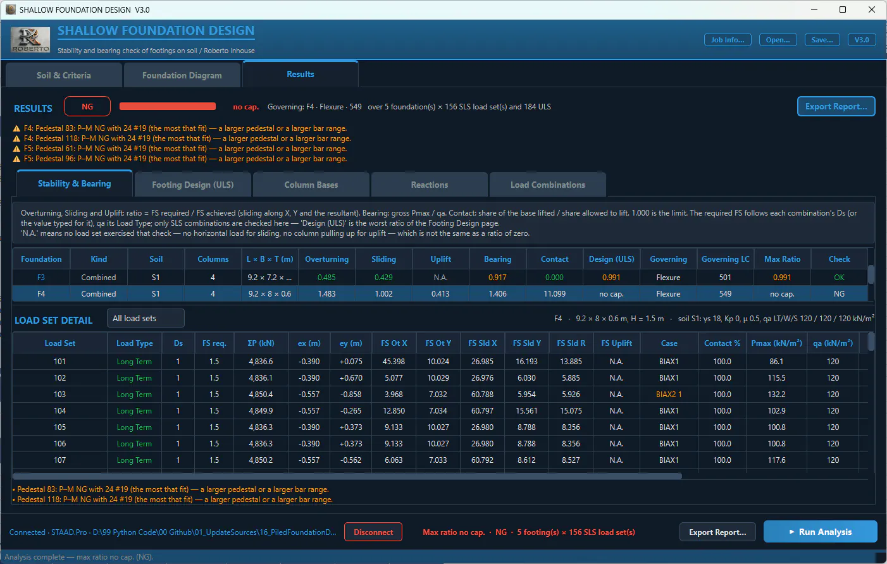
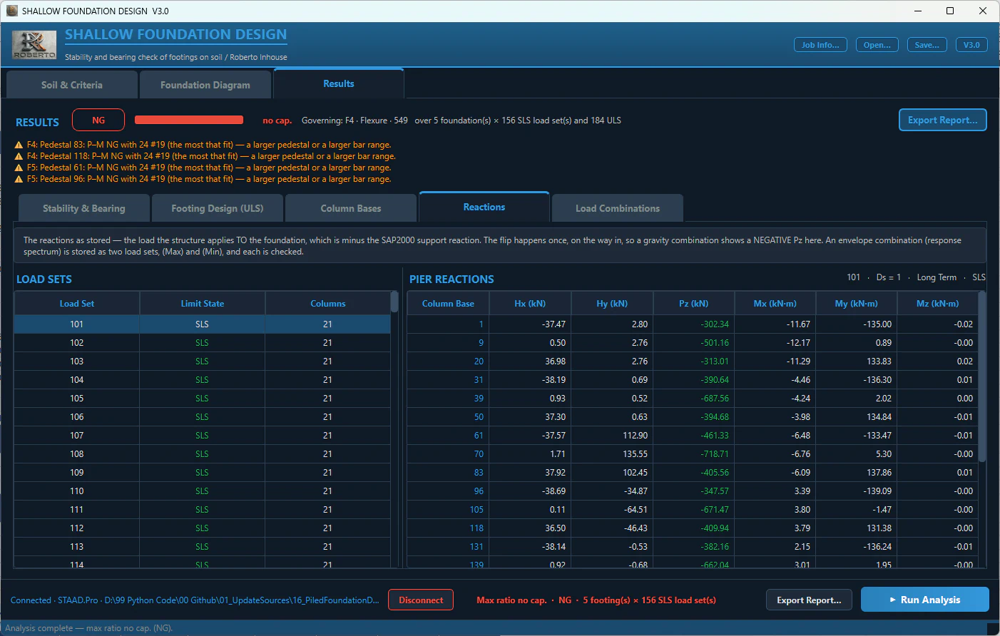
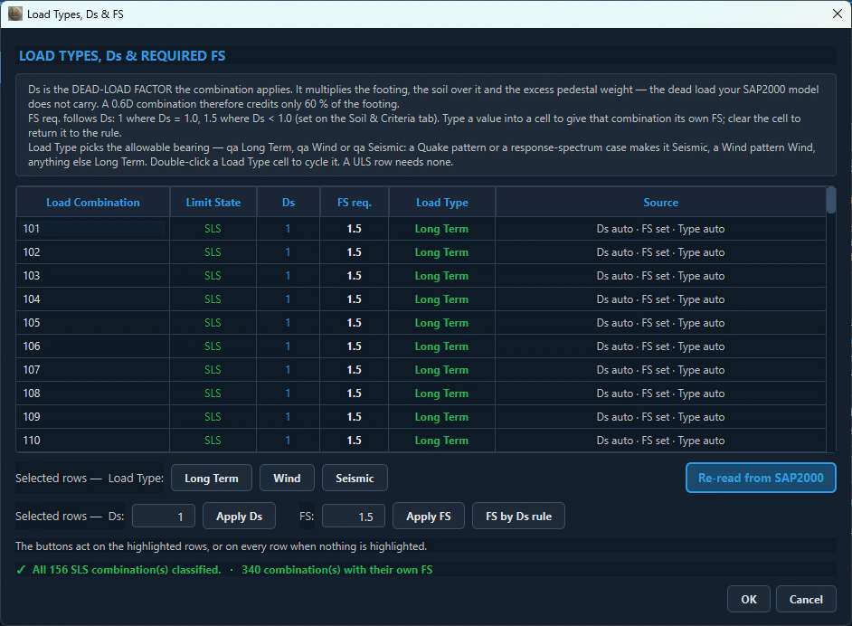
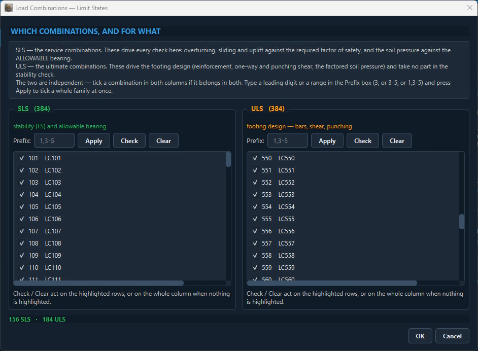
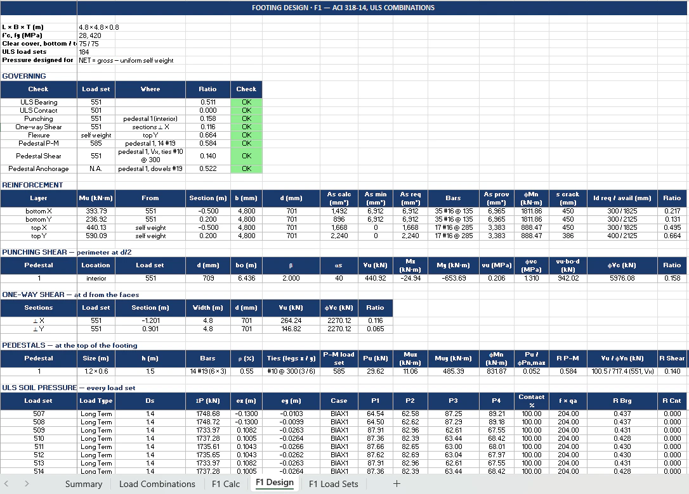
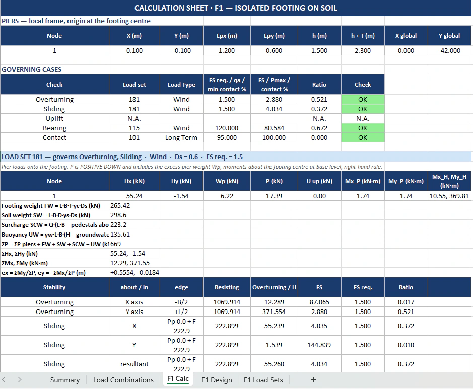

Foundation & Underground
Shallow Foundation Design
Isolated, combined and mat footings on soil under the columns of a SAP2000 or STAAD.Pro model: overturning, sliding, uplift and bearing on every SLS combination, plus footing and pedestal design to ACI 318-14 on every ULS one.

⤢








Key features
- Reads model directly from open <b>SAP2000</b>/<b>STAAD.Pro</b> model
- Click a column for an <b>isolated footing</b>, select several columns for a <b>combined footing / mat</b>
- Automatically proposes dimensions and see results update live
- SLS checks: <b>overturning, sliding, uplift, gross bearing</b>
- Allowable bearing (<b>long term/wind/seismic</b>), with groundwater buoyancy
- ULS footing design to <b>ACI 318-14</b>: one-way shear, bending reinforcement
- <b>Pedestal design</b>
- Metric D bars or ASTM A615M (#) bars
- Saves the project to one .json (reopens without SAP2000) and exports Excel report
System requirements
Windows / SAP2000 or STAAD.Pro